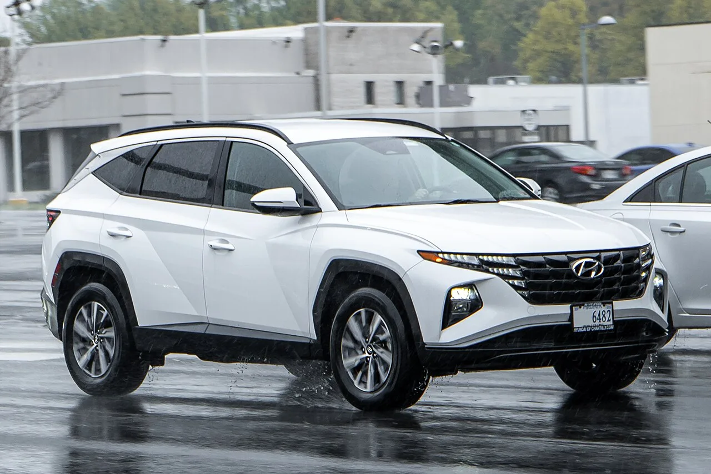
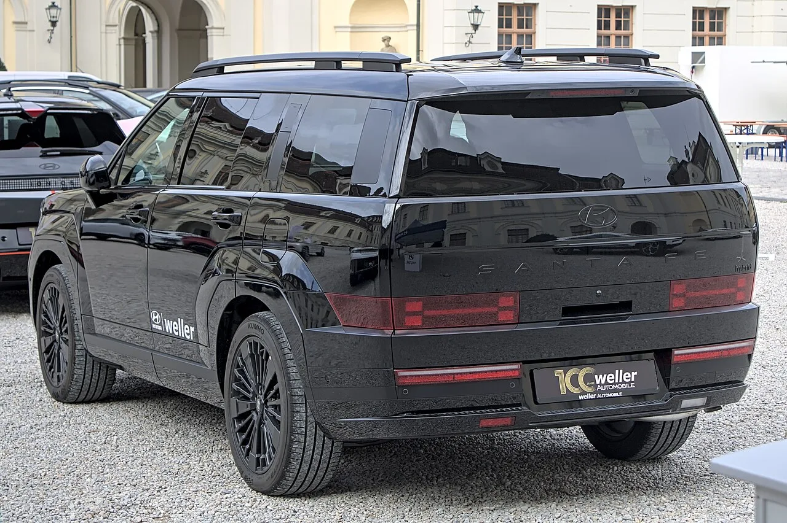
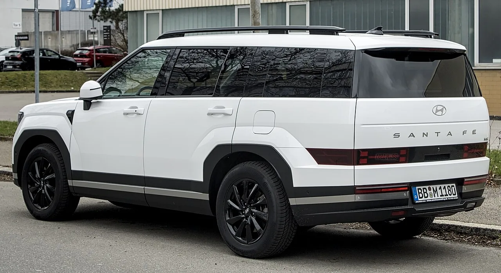

▲ 현대 싼타페. 같은 차가 국내와 미국에서 정반대 성적을 냈다
7월 현대 싼타페의 성적표는 어느 시장을 보느냐에 따라 완전히 달라집니다.
국내에서는 3,822대로 9위, 전월 대비 6.0% 줄었습니다. 미국에서는 1만3,373대로 전년 대비 20% 늘었습니다.
같은 차입니다. 그런데 판매량이 3.5배 차이가 납니다. 왜 이런 격차가 생기는지 짚어보겠습니다.
1. 숫자부터 나란히 놓고 보면
먼저 7월 실적을 국가별로 정리하겠습니다.
| 구분 | 한국 | 미국 |
|---|---|---|
| 현대차 | 4만2,683대 | 8만2,480대 |
| 기아 | 5만4,604대 | 7만5,857대 |
| 싼타페 | 3,822대 | 1만3,373대 |
흥미로운 역전이 하나 보입니다. 국내에서는 기아(5만4,604대)가 현대차(4만2,683대)를 앞서는데, 미국에서는 현대차(8만2,480대)가 기아(7만5,857대)보다 많습니다.
싼타페의 격차는 그보다 더 큽니다. 국내 3,822대, 미국 1만3,373대. 미국이 3.5배입니다.
2. 미국에서 싼타페 위에 있는 두 대
미국 현대차 판매에서 싼타페는 3위입니다. 위에 두 대가 있습니다.
🇺🇸 미국 현대차 7월 판매 상위 3개 모델
- 1위 투싼 — 1만9,714대 (+20%)
- 2위 아반떼 — 1만7,115대 (+39%)
- 3위 싼타페 — 1만3,373대 (+20%)
주목할 점은 세 모델 모두 두 자릿수 성장했다는 것입니다. 특히 아반떼가 39% 늘었습니다. 준중형 세단이 미국에서 이 정도로 성장하는 것은 흔한 일이 아닙니다.
현대차 미국 판매의 73%가 SUV입니다. 투싼·싼타페·팰리세이드로 이어지는 SUV 라인업이 볼륨을 만들고, 아반떼가 진입 가격대를 받쳐주는 구조입니다.

▲ 투싼은 7월 미국에서 1만9,714대(+20%)로 현대차 1위를 차지했다
3. 국내에서 싼타페가 밀린 이유
반면 국내에서는 사정이 다릅니다. 싼타페는 9위, 3,822대입니다.
먼저 짚을 것은 7월 국내 시장 전체가 10.7% 줄었다는 점입니다. 6월 말 종료된 개별소비세 3.5% 한시 인하의 반작용입니다. 싼타페의 -6.0%는 시장 평균보다는 오히려 선방한 수치입니다.
더 근본적인 요인은 같은 그룹 안의 경쟁입니다. 국내에서 싼타페 위에는 셀토스(7,427대)·카니발(6,917대)·쏘렌토(6,153대)·스포티지(5,381대)가 있습니다. 전부 기아입니다.
특히 쏘렌토는 싼타페와 정면으로 겹칩니다. 같은 중형 SUV 체급에 파워트레인 구성도 유사합니다. 국내 시장에서는 이 경쟁이 훨씬 치열하게 작동합니다.
4. 왜 미국에서는 안 겹치나
핵심은 시장별 라인업 배치입니다.
미국에서 현대차는 투싼(준중형) → 싼타페(중형) → 팰리세이드(대형)로 이어지는 계단을 명확히 나눠놨습니다. 체급 간 간격이 넓어 서로 잡아먹지 않습니다.
국내는 다릅니다. 현대와 기아가 사실상 같은 체급에서 나란히 경쟁합니다. 싼타페와 쏘렌토, 투싼과 스포티지가 같은 매장 상권 안에서 부딪힙니다.
즉 싼타페가 국내에서 부진한 것이 아니라, 국내 시장 구조에서는 파이를 나눠 갖는 구조라고 보는 편이 정확합니다. 그룹 전체로 보면 손실이 아닙니다.
기아가 국내에서 현대차를 앞서고, 미국에서는 뒤지는 역전 현상도 같은 논리로 설명됩니다. 기아는 국내 신차 사이클(셀토스 3세대 등)이 앞서 있고, 현대차는 미국 라인업 구조가 더 잘 짜여 있습니다.

▲ 미국에서는 투싼-싼타페-팰리세이드로 체급이 명확히 나뉜다
5. 이 숫자에서 읽어야 할 것
국내 판매량만 보고 "싼타페가 실패했다"고 읽으면 절반만 본 것입니다.
같은 차가 미국에서 20% 성장하며 브랜드 3위에 올라 있습니다. 제품 경쟁력 문제가 아니라 시장별 경쟁 구도의 문제입니다.
반대로 미국 실적만 보고 안심할 수도 없습니다. 국내에서 기아 4개 모델에 밀려 9위에 머무는 상황은, 그룹 내부에서 싼타페의 포지션을 어떻게 잡을 것인가라는 숙제를 남깁니다.
현대차 입장에서 미국 SUV 비중 73%는 강점이자 위험입니다. SUV 수요가 꺾이는 순간 대체할 볼륨 모델이 마땅치 않기 때문입니다. 아반떼의 39% 성장이 그 완충 역할을 하고 있습니다.

▲ 싼타페의 성적은 제품 경쟁력보다 시장별 경쟁 구도의 문제에 가깝다
6. 정리
7월 싼타페는 국내 3,822대(-6.0%), 미국 1만3,373대(+20%)를 기록했습니다. 3.5배 격차입니다.
국내 부진의 직접적인 원인은 개별소비세 인하 종료에 따른 시장 축소이고, 구조적인 원인은 셀토스·카니발·쏘렌토·스포티지로 이어지는 기아 라인업과의 정면 경쟁입니다.
미국에서는 투싼-싼타페-팰리세이드로 체급이 분리돼 있어 이런 충돌이 없습니다. 같은 차의 성적이 시장 구조에 따라 얼마나 달라질 수 있는지를 보여주는 사례입니다.